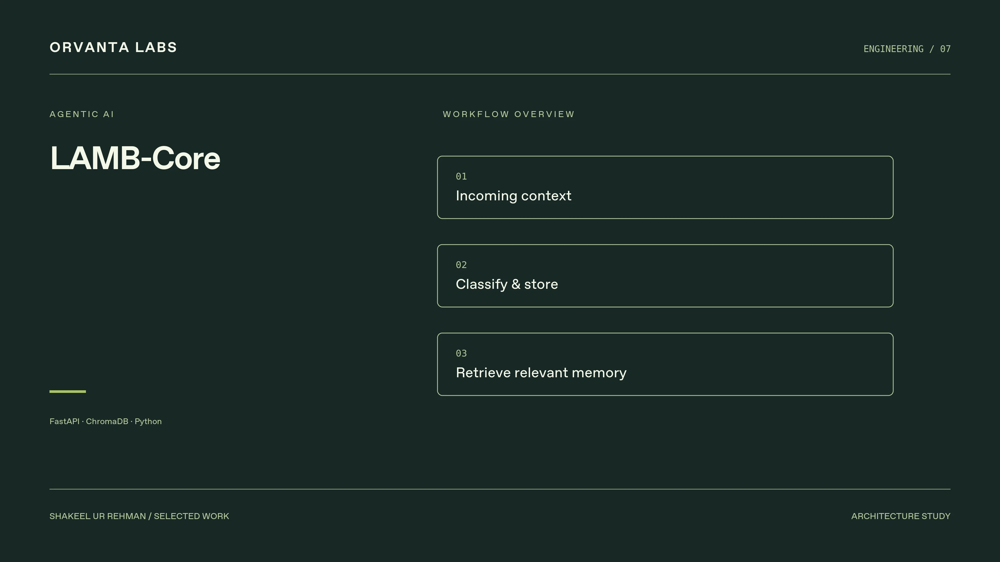

01 / THE PROBLEM
Why build it?
Stateless language-model interactions lose useful context. Memory systems must choose what to store, what to retrieve, and how information changes over time.
AGENTIC AI / ENGINEERING PROJECT
Persistent context for AI applications.

An experimental agent-memory architecture exploring classification, attention, retrieval, and memory lifecycle management.
View source on GitHub ↗01 / THE PROBLEM
Stateless language-model interactions lose useful context. Memory systems must choose what to store, what to retrieve, and how information changes over time.
02 / THE IMPLEMENTATION
LAMB-Core exposes memory-related operations through FastAPI and documents memory classification, attention weighting, salience, forgetting, and consolidation components. ChromaDB provides the vector-storage layer.
A GOOD PLACE TO START